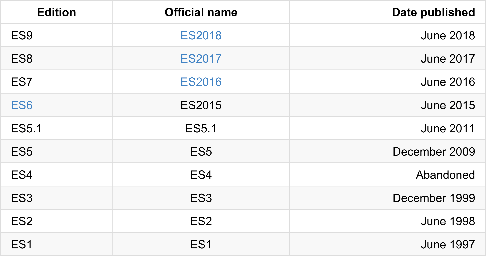
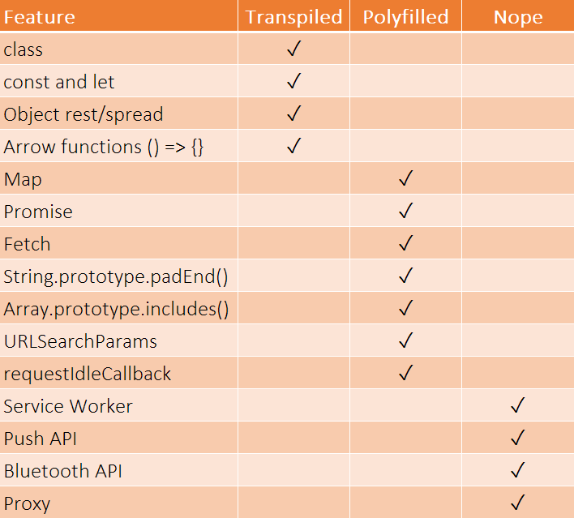

ECMAScript
Soporte actual, desarrollos cross-browser y rendimiento
¿Quién soy?
Fran Linde Blázquez
Ingeniero de Software
Desarrollador Webs/Apps desde 2013
Desarrollador Front-End en Minsait desde 2016
¿Qué vamos a ver?
1. ECMAScript
2. Algunas novedades de ES6/ES7/ES8
3. ECMAScript & Cross Browser
4. Herramientas de Benchmarking
5. Comparativas de código
6. Conclusiones
1. ECMAScript
¿Qué es ECMAScript?
Estándar de ECMA International (algo así como ISO)
TC39: comité que lo regula
Formado por Mozilla, Apple, Google, Facebook...
Siguen un proceso
Decimos que es el estándar de JavaScript
También de ActionScript (Flash) y JScript (Netscape)
¿ES6? ¿ES2015?
ESNext es la próxima versión: ES2019 (ES10)
2.1 Algunas novedades de ES6
Class
Ejemplo:
class Poligono {
constructor(height, width) {
this.height = height;
this.width = width;
}
get area() {
return this.calcArea();
}
calcArea() {
return this.height * this.width;
}
}
Template Strings / Literals
Cadenas multi-línea:
console.log(`text line 1
text line 2
and the last text line`);
Interpolación de valores:
let a = 5;
let b = 10;
console.log(`Fifteen is ${a + b}.`);
Destructuring
Ejemplo:
let miArray = ["uno", "dos", "tres"];
// sin destructuring
let var1 = miArray[0];
let var2 = miArray[1];
let var3 = miArray[2];
// con destructuring
let [var1, var2, tres] = miArray;
Parámetros por defecto
Ejemplo:
function multiplicar(a, b = 1) {
return a*b;
}
multiplicar(5);
Spread
Ejemplo:
var partes = ['hombros', 'rodillas'];
var persona = ['cabeza', ...partes, 'pies'];
Ejemplo 2:
let arr1 = [0, 1, 2];
let arr2 = [3, 4, 5];
arr1.push(...arr2);
Arrow Functions
Ejemplo:
let operacion = (x, y) => {
let aux = x + y;
aux = aux*8.45;
return aux;
}
Ejemplo 2:
let duplica = (x) => 2*x;
Ejemplo 3:
setTimeout(() => console.log('Hola'), 1000));
Object.assign
Ejemplo:
var o1 = { a: 1 };
var o2 = { b: 2 };
var o3 = { c: 3 };
var obj = Object.assign(o1, o2, o3);
Ejemplo 2:
var o1 = { a: 1, b: 1, c: 1 };
var o2 = { b: 2, c: 2 };
var o3 = { c: 3 };
var obj = Object.assign({}, o1, o2, o3);
Promise
Ejemplo:
var promise1 = new Promise(function(resolve, reject) {
setTimeout(function() {
resolve('foo');
}, 300);
});
promise1.then(function(value) {
console.log(value);
// expected output: "foo"
});
2.2 Algunas novedades de ES7
Array.prototype.includes()
Ejemplo:
let numbers = [1, 2, 3, 4];
if(numbers.includes(2)) {
console.log('Array contains value');
}
Potencias
Ejemplo:
let base = 3;
let exponent = 4;
let result = base**exponent;
console.log(result); //81
2.3 Algunas novedades de ES8
Async / Await
Ejemplo:
async function fetchData(url) {
try {
let request = await fetch(url);
let text = await request.text();
return JSON.parse(text);
}
catch (err) {
console.log(`Error: ${err.stack}`);
}
}
Trailing commas
Ejemplo:
const trailCommaFn = function(
param1,
param2,
param3,
param4,
) {
// do something in function body
console.log(param1 + param2);
}
Object.values / Object.entries
Ejemplo:
Object.entries({ foo: 1, bar: 2 })
// [['foo', 1], ['bar', 2]]
Ejemplo 2:
Object.values({ foo: 1, bar: 2 })
// [1, 2]
3. ECMAScript & Cross Browser
Algunos problemillas:
Llega poco a poco a los navegadores
Estado actual en formato Tabla
¿Cómo lidiamos con esto?
Babel Web Oficial
Transpilador. Reescribe código JavaScript usando estándares anteriores.
Paso 1: Transpilación
Paso 2: Polyfills (basado en core-js)
Otro Polyfill interesante: polyfill.io
¿Qué es transpilable y qué no?
Una buena regla:
Si es nueva sintáxis: transpilar
Si es nuevo objecto/método: poylfill
Si es nueva API: estás muerto :)
3. Herramientas de Benchmarking
Chrome DevTools. Chrome only ¯\_(ツ)_/¯
Librerías como benchmarkjs usada en jsPerf.com
performance.now()
var t0 = performance.now();
hacerAlgo();
var t1 = performance.now();
console.log("hacerAlgo ha tardado " + (t1 - t0) + " ms.");
console.time() y console.timeEnd()
console.time('test');
let acum = 0;
for(let i=0; i<9999999; i++){
acum++;
}
console.timeEnd('test');
4. Comparativas de código
Se encuentran en el siguiente repositorio
https://github.com/DevMeetings-Madrid/ecmascript-crossbrowser-performance5. Conclusiones
Conclusiones:
No todos los navegadores implementan todo ES
Cada navegador usa un motor JS diferente
Babel transpila SIEMPRE lo que no es 'polyficable'
Los polyfills son func. grandes pero eficientes
Consejos:
Debemos preguntar SIEMPRE navegadores soportados
Usa JS moderno y aplica transpilador/polyfills
Cuidado con los polyfills que elegimos